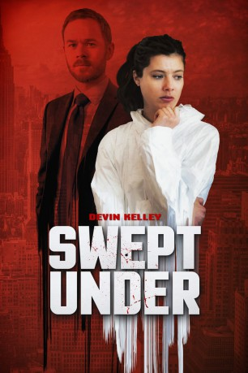

#10204 Swept Under
 
 IMDB-Wertung: 6.2 / 10
IMDB-Wertung: 6.2 / 10  Metascore: 0
Metascore: 0 
Morgan (Devin Kelly) verdient ihr Geld als routinierte Tatortreinigerin, die so schnell nichts mehr aus der Fassung bringt. Nach einem besonders blutigen Mord fällt ihr ein Beweisstück in die Hände, das die Forensiker übersahen. Zusammen mit dem unerfahrenen Detective Nick (Aaron Ashmore) beginnt sie auf eigene Faust mit den Ermittlungen. Die beiden stoßen auf eine mysteriöse Mordserie. Doch ihre aufkeimenden Gefühle füreinander machen die Suche nach dem Killer nicht gerade einfacher. Cooler kanadischer Crime-Thriller mit einem Ermittler-Duo, zwischen dem die Funken fliegen.
Jahr: 2015
Dauer: 87 Minuten
FSK:
Land: Kanada Studio: Sky CinemaTonspuren: DD2.0 - ,
Untertitel:
Auflösung: 1080p (1920x1080) Größe: 3819 MB
Genre: Thriller
Regisseur:  Michel Poulette
Michel Poulette
Drehbuch: Doug Barber, James Phillips
Soundtrack: James Gelfand, Louise Tremblay
Darsteller:
- Devin Kelley als Morgan Sher
 Aaron Ashmore als Nick Hopewell
Aaron Ashmore als Nick Hopewell Stephen Bogaert als Adam Fowler
Stephen Bogaert als Adam Fowler- Brett Ryan als Ed Braxton
 Joanne Boland als Captain LaSalle
Joanne Boland als Captain LaSalle- Andre Bedard als Forensic Tech
- Stephanie Costa als Detective
 Vladimir Jon Cubrt als Gary Butler
Vladimir Jon Cubrt als Gary Butler- Marianne Farley als Sheila Butler
- Bineyam Girma als Young cop
 Kjartan Hewitt als Dennis
Kjartan Hewitt als Dennis- Patrizio Sanzari als Forensic Tech
- Sebastien R. Teller als Young Adam
- Christopher de Courcy-Ireland als Oliver Waxman
- Renaud Langevin als Anton Duncan
- James Wallis als Joel
- Shawn Zimmerman als Young Oliver
Datei: X:\2015(N-Z)\Swept Under (2015, FSK, 1920x1080).mkv seit 18.12.2018
Festplatte: HD 2015(A-Z)
 Es gibt insgesamt 161 Filme in der Gruppe '2015(N-Z)'
Es gibt insgesamt 161 Filme in der Gruppe '2015(N-Z)'